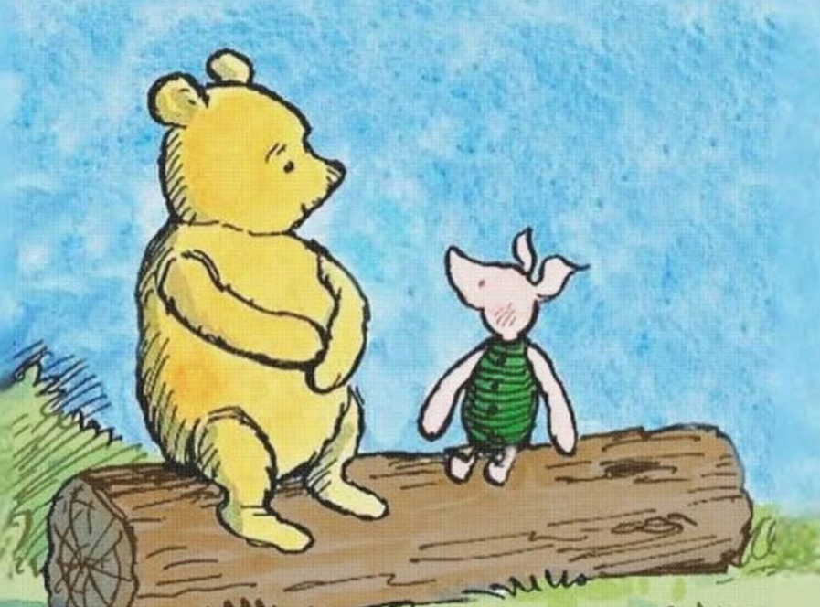
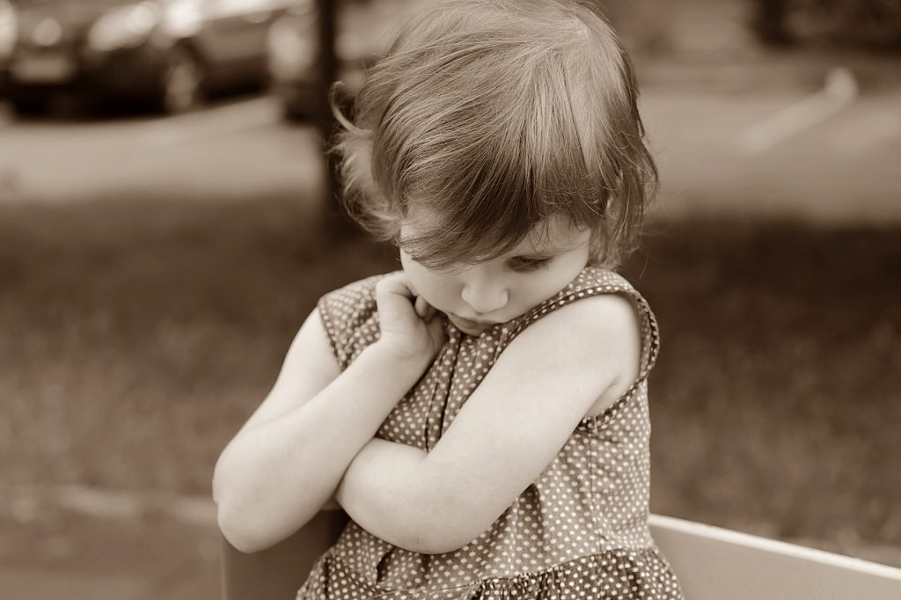

View full sizeIn the heart of the Hundred Acre Wood, Winnie-the-Pooh and Piglet teach us a valuable lesson about how children may overcome their shyness. Their friendship captures the essence of what parents may want to know. With his kind heart and his gentle words, Winnie encourages and supports Piglet to overcome his shyness and fears.
But What is Shyness?
Contrary to what some might think, shyness is not just one trait. Arnold H. Buss, a professor of psychology at the University of Texas at Austin, made an important distinction in the late 1980s between two types of shyness: fearful shyness and self-conscious shyness [1] . Some researchers call this negative and positive shyness [2, 3, 4, 5]. Both types of shyness appear from ambivalent arousal: being interested in the social situation but, at the same time, being nervous and worried about how it will go [1]. Thus, a conflict between approach and avoidance motivation occurs. Consider two five-year-old’s who are complimented by a stranger while strolling in the market with their mom.
- The first child hides behind the mother, avoids eye contact, and starts crying.
- The second child blushes, smiles, and gazes downward.
One may argue both children are shy but in a different way. The child in the first scenario is likely to be fearfully shy, while the second child is probably self-consciously shy.
Fearful Shyness
Fearful or negative shyness arises when someone experiences avoidance as the dominant motivation in the approach-avoidance conflict in a new social situation or when others approach too quickly or too closely. When young children are fearfully shy, they often show that by crying, inhibition, and seeking support by their caregiver, just like in our example. Older children might show fearful shyness by wanting to avoid these social situations or worrying about their occurrence [1]. Scientists believe that this has to do with the nervous system putting the body into a state of hyperarousal due to perceiving social situations as a threat [2].
Self-Conscious Shyness
The child in the second scenario probably feels observed and exposed. This feeling describes self-conscious shyness. We might experience it when we are put at the center of attention or when we are confronted by authority figures [1]. This may happen even when receiving compliments. For children, bashful behavior, coy smiles, or blushing are common reactions to such situations. Scientists call these reactions positive shyness and think it appears when the motivation to approach is stronger than the motivation to avoid [2]. This causes the nervous system to react differently. While both negative and positive shyness may result in the child experiencing the situation as initially uncomfortable, blushing usually only occurs in situations where the child is experiencing positive shyness. This is because blushing is an indicator of the child wanting to remain in the situation, despite any initial discomfort [3].

View full sizeThe Development of Shyness
Buss believed that fearful shyness can be observed in children as early as infancy and that it is evolutionarily connected to our basic fear system that tries to protect us from possible harmful situations. In harmful situations we tend to respond with the same psychophysiological reactions as when fearfully shy [1]. Our heart rate accelerates, followed by a greater drop in heart rate variability [2].
For self-conscious shyness Buss believed that one needs to be able to see themselves from someone else’s perspective in order to feel self-consciously shy [1]. Only if we think about ourselves as objects that can be put on display, we can feel self-consciously shy. Therefore, self-conscious shyness was thought of as something that may emerge later on in life.
More recent research has shown that self-conscious shyness and fearful shyness indeed develop separately [2, 6]. However, self-conscious shyness in the form of coy smiles may emerge earlier than previously expected. First signs might be already observable in babies who are 2-4 months old [4, 5].
At the University of Amsterdam, researchers followed families with children from the age of 4 months up until they were 7 1/2 years old. Throughout various tasks, such as interacting with the baby through a mirror at infant stage, mimicking animal sounds together at toddler stage, and finally, at the age of 4 and 7, having the child sing a song on stage, they explored how positive and negative forms of shyness can be observed in children’s facial expressions [2]. They found that positive shyness is stable from infancy to toddlerhood and from early to late childhood. Although negative shyness was stable in early childhood (2-5 years), it did not remain stable in late childhood indicating that early childhood may be a period when the environment, including parents, may influence the change.
The Role of Parenting
For parents, understanding these distinctions in shyness can be crucial for supporting their children overcome negative forms of shyness. Recognizing and responding to these early signs of negative shyness can help in nurturing well-adjusted, emotionally resilient children. While research also highlights that there might be a genetic component to shyness, there is still a lot parents can do!
Researchers found that not only the way we parent our children sets them up to be more or less likely to develop negative forms of shyness, but also the attachment our children have with us plays a role. In particular they found that building a connection with our children that is dominated by very strict rules and control is associated with negative forms of shyness in children [7]. Therefore, parents should try to create a safe haven for their children, where it is okay to make mistakes, and learn from them.
When it comes to parenting, researchers stress that as much as we all want to protect our children, overprotective control is actual counterproductive. When we do not allow our children to experience some sort of independence, we are taking away their opportunities to practice and develop coping skills [7]. Parents, therefore, may be advised to occasionally take a step back, and let their children find their own strategies to handle their emotions, instead of immediately comforting them. However, when exposing a child to situations they are nervous about, it is important to remain available, accepting and supportive.
“Expecting nothing often leads to the very best kind of something.”
This slight adaption of one of Winnies famous quotes might summarize a key aspect of how we can help our children if they already developed negative forms of shyness. While we should encourage our children, and gently guide them, it’s also important not to push them too hard and to have too many expectations. Developmental psychologist Milica Nikolić explains: “If we expect our children to be different than they are, we might harm their self-esteem.” Therefore, taking actions step by step and acknowledging our children’s uniqueness rather than expecting them to be a certain way is key.
About the Author:
Laura Maria Fetz is a Research Assistant at the University of Amsterdam, contributing to the Department of Child Development and Education. Her interests are rooted in developmental psychology, along with methods and statistics in the field. For further insights, feel free to connect on LinkedIn.
References:
[1] Buss, A. H. (1986). A theory of shyness. In Shyness: Perspectives on research and treatment (pp. 39-46). Boston, MA: Springer US.
[2] Colonnesi, C., Nikolić, M., Bögels, S.M. (2020). Development and Psychophysiological Correlates of Positive Shyness from Infancy to Childhood. In: Schmidt, L.A., Poole, K.L. (eds) Adaptive Shyness. Springer, Cham. https://doi.org/10.1007/978-3-030-38877-5_3
[3] Nikolić, M., Colonnesi, C., de Vente, W., & Bögels, S. M. (2016). Blushing in early childhood: Feeling coy or socially anxious?. Emotion, 16(4), 475.
[4] Colonnesi, C., Bögels, S. M., de Vente, W., & Majdandžić, M. (2013). What coy smiles say about positive shyness in early infancy. Infancy, 18(2), 202-220.
[5] Reddy, V. (2001). Positively shy! Developmental continuities in the expression of shyness, coyness, and embarrassment. In W. R. Crozier & L. E. Alden (Eds.), International handbook of social anxiety: Concepts, research and interventions relating to the self and shyness (pp. 77–99). New York: John Wiley & Sons.
[6] Eggum‐Wilkens, N. D., Lemery‐Chalfant, K., Aksan, N., & Goldsmith, H. H. (2015). Self‐conscious shyness: Growth during toddlerhood, strong role of genetics, and no prediction from fearful shyness. Infancy, 20(2), 160-188.
[7] Rubin, K. H., & Coplan, R. J. (Eds.). (2010). The development of shyness and social withdrawal. The Guilford Press.
Let’s talk
Comments
Share a question, an idea, or some feedback. I’d love to hear your thoughts.
Comments by HTML Comment Box. No account is needed to leave a comment.